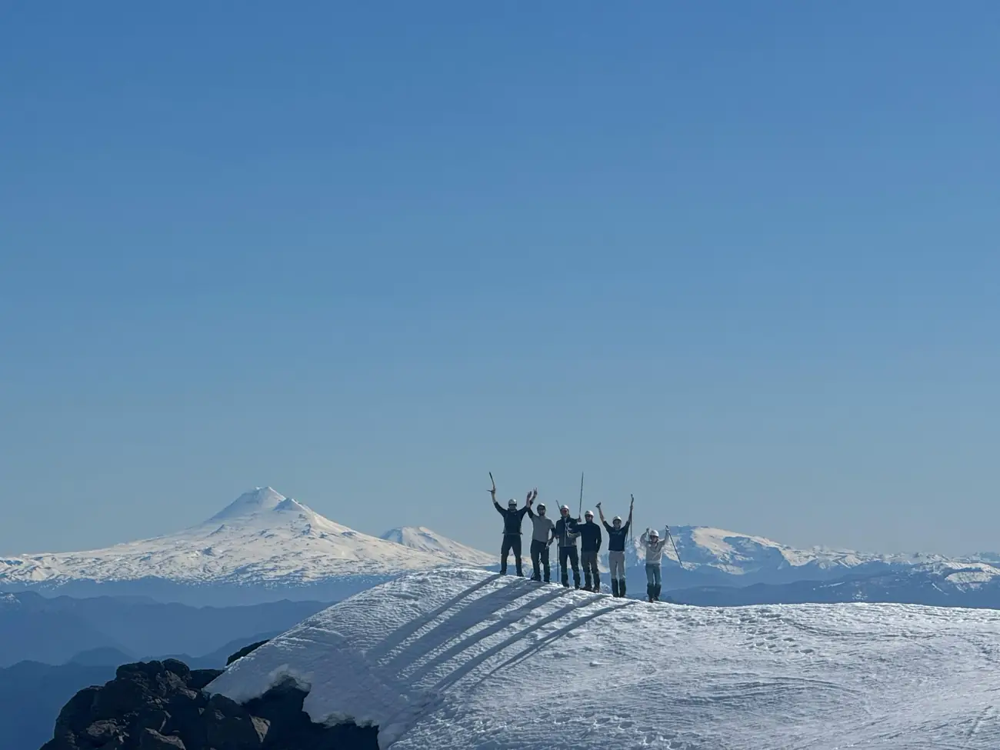
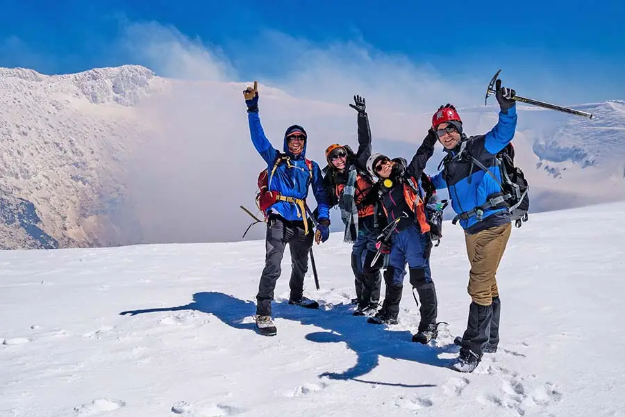
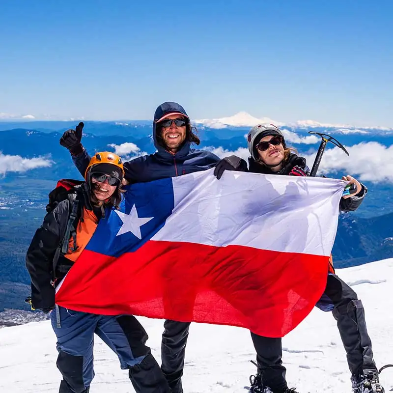
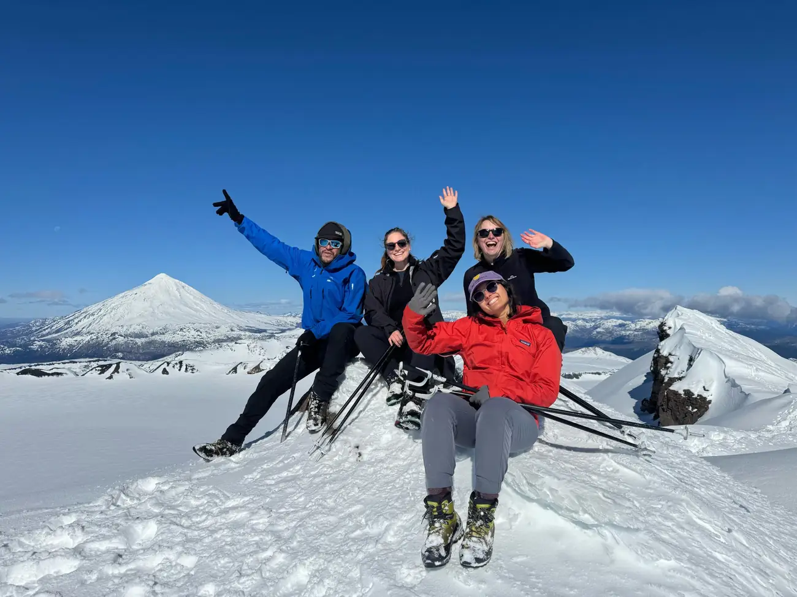

Te invitamos a explorar el imponente volcán Villarrica, uno de los más activos de Sudamérica, y a vivir una experiencia que quedará grabada para siempre en tu memoria.
Nos juntamos a las 6:00 en la agencia para un día lleno de emociones y paisajes impresionantes. Llegaremos a la cumbre, a 2.847 metros sobre el nivel del mar. Es ideal para quienes buscan superar sus límites, conectar con la naturaleza y disfrutar un día inolvidable, en familia o con amigos. Nuestro equipo estará contigo en cada paso, cuidando tu seguridad y comodidad.




El día, paso a paso
Salida desde Pucón
Nos juntamos a las 6:00 en la agencia y partimos juntos hacia el volcán.
Control de CONAF
Los guardaparques revisan los permisos de la agencia y el equipamiento técnico. Sin eso, nadie sube.
Centro de esquí
Empieza el sendero a pie. Se reparte el equipo y se revisa el pronóstico.
La Capilla
Parada técnica entre las estructuras de un andarivel abandonado. Acá se come, se hidrata y se calzan los crampones.
Falsa cumbre
Una planicie que engaña: la pendiente hace creer que llegaste. Es el último respiro antes del tramo vertical.
Borde del cráter, 2.847 m
Máscara de gas obligatoria por las fumarolas. Desde acá se ven los lagos y el Lanín.
La bajada y el cierre
Al final del día compartimos una once con los guías y con todo el grupo.
01Incluye
6 ítems
- Entrada al parque nacional (CONAF)
- Chaqueta, cubrepantalón, bastones, guantes, polainas y botas de media montaña
- Crampones, mochila de 32 litros, piolet, casco y máscara de gas
- Guía especializado en español e inglés
- Seguro básico de accidentes
- Traslado desde la agencia, ida y vuelta
02No incluye
1 ítem
- Comida: ligera y preparada. Recomendamos sándwiches, barras de proteína o cereal, frutos secos y chocolate.
03Qué traer
5 ítems
- Ropa cómoda para la temporada, con primera y segunda capa
- Protector solar, gorro y lentes de sol
- Cámara de fotos
- Colación
- Botella de agua, mínimo 2 litros